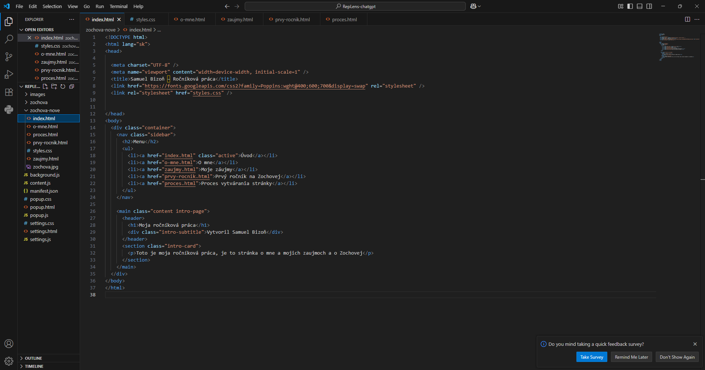
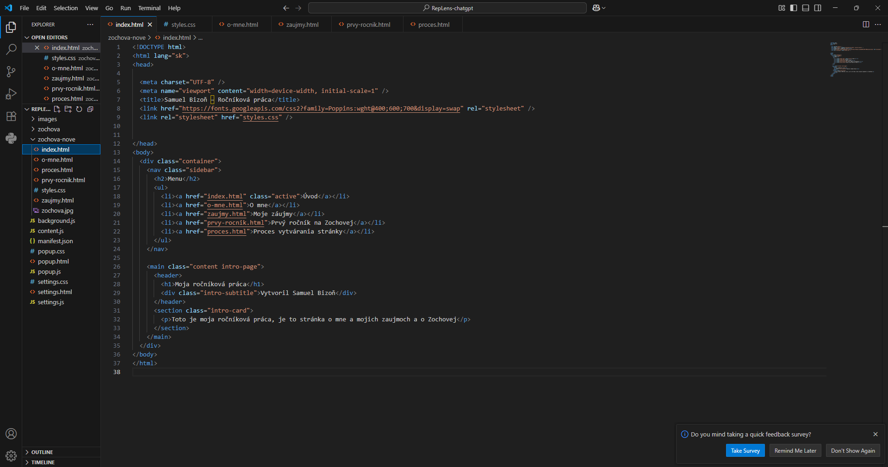

Proces vytvárania stránky
"Stránku" som robil vo Visual Code. Doma som sa naucil HTML a CSS čo su jazyky ktoré som potreboval na toto vedieť. Učil som sa to pred par mesiacmi pomocou YouTubu tak teraz som si to len oprášil.
"Stránku" som robil vo Visual Code. Doma som sa naucil HTML a CSS čo su jazyky ktoré som potreboval na toto vedieť. Učil som sa to pred par mesiacmi pomocou YouTubu tak teraz som si to len oprášil.
